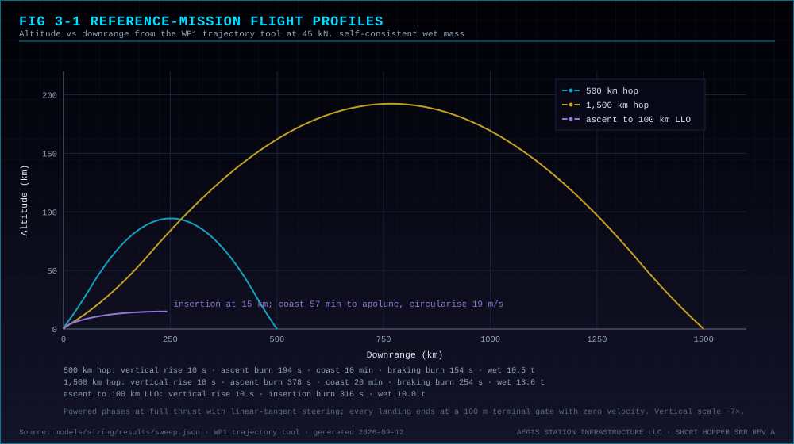
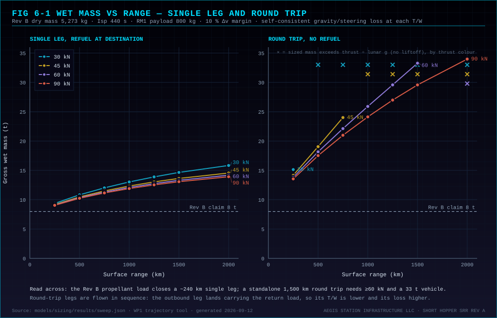
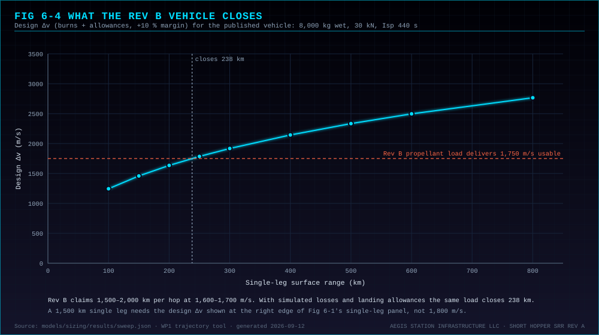

The Short Hopper is a reusable, single-stage, vertical-takeoff-and-landing lunar vehicle for crew and cargo transfer between surface sites near the lunar south pole and, in the station era, between the surface and Aegis Station in low lunar orbit. It burns ISRU-compatible LOX/LH₂ through an engine-out-capable cluster and lands powered on unprepared terrain. Its purpose in the Aegis architecture is logistics: surface sites become connected nodes instead of isolated landings, and surface propellant production, when it exists, converts directly into reach.
Pre-station there is no low-lunar-orbit customer: Gateway and the HLS landers operate in near-rectilinear halo orbit. The Short Hopper's standalone value is surface-to-surface, and every baseline decision in this revision is made for that case first.
| Mission | Definition | Status | Gross wet at 60 kN |
|---|---|---|---|
| RM1 | 500 km surface-to-surface round trip, no refuel at the remote site; 2 crew + 500 kg on both legs | Baseline, sizing case (decision open) | 18,160 kg |
| RM1-G | 1,500 km one-way, refuel at a LUNET node at destination | Growth; same tanks, no hardware change | 13,310 kg |
| RM2 | Surface → 100 km LLO → surface, round trip, no orbital refuel; 4 crew + 200 kg | Station era; covered by the RM1 vehicle with partial propellant | 16,590 kg |
| RM2a | Surface → LLO, refuel at Aegis Station | Station era | 9,960 kg |
| RM3 | Surface → NRHO (Gateway) | Candidate only; not modelled | — |
| Phase | Duration | Notes |
|---|---|---|
| Vertical rise | 10 s | Clear pad structures and dust |
| Ascent burn | 137 s | Full thrust, linear-tangent pitch program |
| Ballistic coast | 11.6 min | Apex 104 km; RCS trim; terrain-relative navigation on approach |
| Braking burn | 113 s | Full thrust to a 100 m hover gate at zero velocity |
| Hover, divert, terminal descent | 71 s + 28 s divert | Hazard assessment; up to 100 m divert; 1 m/s touchdown |

| Physical | |
|---|---|
| Gross wet mass, full load | 18,160 kg (RM1 round trip) |
| Dry mass | 5,273 kg — Rev B allocation carried unchanged, to be re-sized (TBR) |
| Propellant, full tanks | 12,088 kg (66.6% mass fraction), including residual and boil-off allowances |
| Height / landing zone | TBR — the Rev B envelope (~6.5 m, ~4.5 m) predates a tank set holding 4.4× the propellant |
| Propulsion | |
| Propellants | LOX / LH₂, ISRU-compatible, mixture ratio 6.0 |
| Engine configuration | Gimbaled cluster, engine-out capable; three ~20 kN engines recommended (trade open); lands on one engine at a 49% throttle setting |
| Total vacuum thrust | 60 kN |
| Specific impulse | 440 s nominal (430–450 s) |
| Thrust-to-weight at liftoff | 2.0 at full load (RM1 outbound); 2.2 on RM2 |
| Design Δv, one 500 km leg | 2,244 m/s — burns with simulated losses, mid-course, hover, divert, and 10% margin |
| Δv at full tanks | 4,727 m/s with the sizing payload aboard |
| Attitude control | Engine gimbal (pitch/yaw during burns) + RCS (roll, coast, hover, docking) |
| Performance | |
| Surface-to-surface, baseline | 500 km round trip, no refuel at the remote site |
| Surface-to-surface, growth | 1,500 km one-way with LUNET refuel at destination |
| Surface-to-LLO | 100 km LLO round trip, no orbital refuel, at 16,590 kg load |
| Flight time, 500 km leg | ~16 min liftoff to hover gate |
| Reusability / turnaround / precision | 10 sorties between depot maintenance; 24–48 h at a node; ±3 m with TRN — all carried as requirements to be confirmed |
| Crew and cargo | |
| Crew | 4 standard (Config A); 6 maximum at reduced range |
| Cargo | Up to 1,000 kg palletised (Config B); 2 crew + ~500 kg (Config C, the sizing manifest) |
| Crewed duration | 72–96 h |
| Systems | |
| Avionics | Dual-redundant radiation-tolerant flight computers |
| Navigation | FOG/RLG IMU + MEMS backup, lidar and radar altimeters, terrain-relative navigation, LUNET beacon aiding when available |
| Flight software | NASA cFS stack, ten mission applications, 13-phase autonomy executive with sequence gates; unit tests and an eight-scenario harness |
| Communications | S-band/UHF short range; high-gain directional to station or Earth |
| Power / life support | Battery packs with SSSRA node recharge (budget open); O₂/N₂ pressurised cabin, Orion-class LSS heritage |
| Docking | Aft/lower hatch, soft-seal pressurised collar; suitport mate with the Aegis-Class Rover; no EVA for crew transfer |
4 astronauts standard, 6 maximum at reduced range. Full pressurised cabin with suits, airlock and emergency portable air; 72–96 h life support; direct suitport mate with the Aegis-Class Rover. Reference mission RM2.
Up to 1,000 kg on palletised latch-and-lock mounts: ISRU tanks, EVA gear, small rovers, sample-return payloads. Optional robotic assist arm. Not a sizing case.
2 crew plus ~500 kg. Medical evacuation, science payload delivery, priority crew and equipment moves between surface nodes. The sizing manifest for RM1.
Payload is carried on every leg of every reference mission; an empty return is not credited in the sizing.
Thrust class is the finding that reshaped the vehicle. Below a liftoff thrust-to-weight ratio of about 2 the gravity and steering loss on a ballistic hop rises faster than the thrust saves mass, and below 1 the round-trip cases do not close at all. At 30 kN no standalone round trip closes; 45 kN closes the 500 km round trip at 19.1 t with T/W 1.5; 60 kN closes it at 18.2 t with T/W 2.0. Rev C carries 60 kN total from a cluster because a single engine has no engine-out response during powered descent, which is the top hazard for a crewed lander.
No supplier offers a deep-throttling LOX/LH₂ vacuum engine in the 15–30 kN class; the engine is a technology-development partnership. With three engines the vehicle lands on one at a conventional 49% throttle setting, which takes deep throttling off the critical path.
| Mass element | Mass | Share of 18,160 kg wet | Note |
|---|---|---|---|
| Propellant (LOX/LH₂) | 12,088 kg | 66.6% | RM1 round trip incl. residual and boil-off allowances |
| Structure / tanks | 2,110 kg | 11.6% | Rev B allocation; TBR for the larger tank set |
| Cabin / LSS | 1,055 kg | 5.8% | Rev B allocation |
| Propulsion system | 790 kg | 4.4% | Rev B allocation; TBR for a cluster |
| Landing gear | 527 kg | 2.9% | Rev B allocation |
| Avionics / GN&C | 422 kg | 2.3% | Rev B allocation |
| Mass margin (7%) | 369 kg | 2.0% | Rev B policy |
| Payload (2 crew + 500 kg) | 800 kg | 4.4% | Carried on both legs |
| Gross wet mass | 18,160 kg | 100% | Dry 5,273 kg + payload + propellant |
Sensitivity at 60 kN: dry mass ±15% moves the RM1 vehicle between 15.6 and 20.9 t; Isp 420–460 s moves it between 19.2 and 17.3 t. Dry mass dominates, which is why the structure and cluster allocations are the first partner items.


The flight software exists. It is a NASA core Flight System stack of ten ASI mission applications — executive, GN&C, propulsion, power, thermal, ECLSS, communications with LUNET, cargo, docking with landing gear, crew interface — plus the standard NASA limit-checker, stored-command, health, housekeeping, storage and file applications. The executive implements the 13-phase flight state machine the CONOPS uses, with table-driven sequence gates and a manual-override inhibit mask. The stack carries unit tests, an eight-scenario sortie harness (long-range hop, orbital docking, refuel, crew aborts from ascent and descent, ECLSS leak, LUNET handoff) and nineteen accepted architecture decision records, and boots to operational in the cFS image against a vehicle simulator.
What it does not yet do is stated plainly in the SRR: the navigation filter is deferred, terrain-relative navigation is not implemented, the abort library's profiles are placeholders for a real solver, and the simulation plant is vertical-axis only. The next software stage flies the reference missions closed-loop against the SRR trajectory tool. The vehicle constants in the software are generated from the SRR budget workbook, so the software and this dossier cannot drift apart.
Undated by design. The sequence is ordered so that every step ASI can execute alone comes first, every hardware step is a partner work package with a defined input, and no step assumes a customer that does not exist. The Rev B PDR 2026 / CDR 2027 / prototype 2028 / flight 2029 line is withdrawn.
| Stage | Content | Exit criterion |
|---|---|---|
| 0 — SRR Rev A | Mission set, reference missions, requirements, budgets, trades, risks, verification strategy | Done; design-authority decisions pending |
| 1 — Analysis closure | Insertion-altitude trade, abort trajectories, rendezvous budget, boil-off and power budgets with partner data | Every placeholder replaced or owned |
| 2 — Software to flight depth | Full navigation filter, trajectory-tool guidance targets and abort profiles, FDIR catalogue, closed-loop flights against the trajectory tool | Reference missions flown closed-loop in simulation |
| 3 — Subsystem demonstrators | Engine class demonstration, tank heat-leak article, gear drop tests, collar seal tests, ECLSS bench | Subsystem requirements verified with partners |
| 4 — Uncrewed flight article | Full RM1 profile flown uncrewed, including an unprepared-site landing and the return after a surface stay | Uncrewed before crewed |
| 5 — Crewed | RM1 crewed; RM2 when a station and a customer exist | Hazard controls closed |
Each is stated in the SRR with its numbers and what would change the recommendation. Nothing in this dossier should be read as settled beyond the physics.
Artemis puts boots on the surface. CLPS puts instruments on the ground. ISRU demonstrations prove propellant can be made. What is missing is the vehicle that connects them: a reusable, refuelable lander that moves crew and cargo between south-polar sites on a schedule, without a new launch from Earth each time, and that reaches an orbital node once one exists.
A vehicle like this is not built by one company. What Aegis Station Infrastructure brings is a System Requirements Review baseline that says what closes and what does not — reference missions with simulated trajectories, a linked budget that reproduces the simulation, requirements with sources, trade studies with numbers, a risk register, and flight software already flying the mission profile in simulation — and a make/buy/partner plan in which ASI owns architecture, flight software, GN&C and integration, buys structures, tanks, gear, cabin, thermal and communications hardware, and partners on the engine.